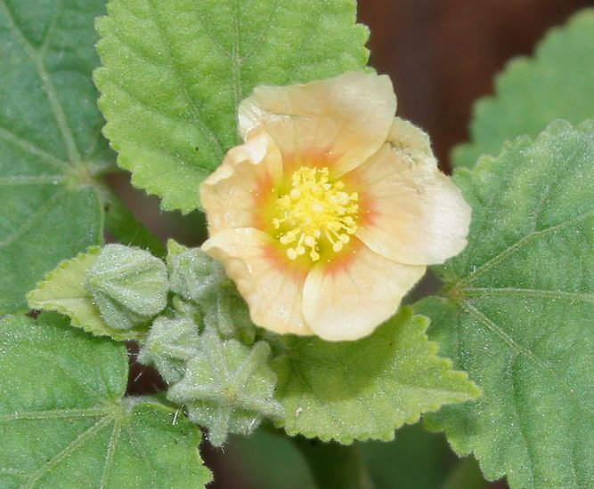

बलाCountry Mallow
Sida cordifolia · Malvaceae · FLR-0226

- Scientific name वैज्ञानिक नाम
- Sida cordifolia L.
- Family कुल
- Malvaceae
- Hindi हिंदी
- बला / खरैंटी
- Local names स्थानीय नाम
- bala, kharenti, khareti, country mallow, sida
- Status here यहाँ की स्थिति
- native
- Movement आवागमन
- Resident, here all year
- Known from कहाँ दर्ज
- Others have published records from the wider Awadh–Purvanchal plain, none yet from Basti–Ayodhya अवध–पूर्वांचल से दूसरों के प्रकाशित अभिलेख, बस्ती–अयोध्या से अभी नहीं
- IUCN IUCN
- not evaluated
- Review समीक्षा
- audited and independently read
When to look कब देखें
Expected mainly in June, July, August, September, October, November. मुख्यतः जून, जुलाई, अगस्त, सितंबर, अक्टूबर, नवंबर में अपेक्षित।
Uses and possibilities उपयोग और संभावनाएँ
“Traditional medicine” means a documented traditional use, not a claim that it works. Nothing on this page is medical advice.
Drawn from the documented uses in the profile below, where each is labelled traditional, current or a research lead. All uses →
Tell it apart from इनसे अलग पहचानें
बला / Country Mallow
Sida cordifolia L. — Malvaceae
बला (खरैंटी) — भारतीय उत्तरी मैदानों का सर्वव्यापी वर्षीय खरपतवार, जो बस्ती के सभी प्रकार की मिट्टी पर उगता है। इसकी पत्तियाँ दिल के आकार की होती हैं, और फूल छोटे, पीले या नारंगी रंग के होते हैं। फली को पहलेदार और कँटीली कहा जाता है, जो जानवरों की खाल में चिपक जाती है। प्राचीन भारतीय ग्रंथों में इसके पत्तों का औषधीय उपयोग दर्ज है, और इसके रेशों को प्राचीन काल में कागज़ बनाने के लिए भी काम लिया जाता था।
Quick Identification त्वरित पहचान
| Feature | Description |
|---|---|
| Form | Erect annual herb, 30–90 cm tall, branched, hairy |
| Leaves | Heart-shaped (cordate), 3–8 cm long, pointed tip, soft hairs, margins finely toothed |
| Flowers | Small, yellow to orange-yellow, 0.8–1 cm diameter, in leaf axils |
| Fruit | A schizocarp splitting into 5–6 one-seeded segments, each with spiny edges and awns, 5–7 mm |
| Stem | Cylindrical, hairy, greenish or reddish, becoming woody below |
Field tip: Look for a hairy herb with heart-shaped leaves and small yellow-orange flowers. The distinctive spiky fruit-segments cling to clothing and animal fur, making it easy to identify by the time it matures.
हिंदी — कैसे पहचानें: दिल जैसी पत्तियाँ, पीले फूल, खुरदरे, काँटेदार फल। मैदानों का सबसे आम खरपतवार।
Morphology आकारिकी
Biometrics (eastern UP specimens):
| Feature | Measurement |
|---|---|
| Plant height | 30–90 cm |
| Leaf length | 3–8 cm |
| Leaf width | 2–7 cm |
| Flower diameter | 0.8–1 cm |
| Fruit segment length | 5–7 mm |
Stem and bark: Hairy, terete, greenish or purplish, becoming woody and tough with age.
Leaves: Alternate, simple, heart-shaped (cordate at base), acuminate at apex, with soft hairs on both surfaces, margins crenate-serrate, petioles 1–3 cm.
Flowers: Solitary in leaf axils, small, yellow to orange, with five petals, epicalyx of 5–6 linear segments below the calyx.
Fruit: A schizocarp that splits into 5–6 one-seeded mericarps (carpels), each with a dorsal lobe and 2 lateral awns, total 5–7 mm.
हिंदी: पत्तियाँ दिल जैसी, पीले-नारंगी फूल, फल काँटेदार। पूरे शरीर पर नरम रोएँ।
Behaviour & Ecology व्यवहार और पारिस्थितिकता
A highly adaptable weed found in all disturbed habitats of the Gangetic plain. It establishes quickly after soil disturbance and prefers warm conditions. The plant is strongly competitive in its first season but is easily controlled by cutting or hoeing. It serves as a food plant for various insects and is a host for butterflies. The fiber in the stem was historically used for paper production in India.
Life Cycle / Phenology जीवन चक्र
| Month / Season | Event |
|---|---|
| May–June | Seed germination; early seedling emergence |
| July–August | Rapid vegetative growth; stem elongation |
| August–October | Flowering begins; first flowers in late summer |
| September–November | Peak flowering and fruiting |
| November onwards | Senescence; seeds mature and fall |
One season; persistent soil seed bank.
हिंदी: जून में अंकुरण, अगस्त-अक्टूबर में फूल-फल, नवंबर तक सूख जाता है।
Associated Species / Interactions संबंधित प्रजातियाँ
- Pollinators: Visited by small bees and butterflies.
- Larval host: Several butterfly caterpillars feed on Malvaceae leaves.
- Herbivores: Leaf-eating beetles and grasshoppers.
Pests and Diseases कीट और रोग
- Leaf beetles (Chrysomelidae) and grasshoppers feed on foliage.
- Powdery mildew occasionally appears.
- Stem rot in very wet conditions.
Agricultural / Human Relevance कृषि प्रासंगिकता
Traditional use: In Ayurvedic texts, Sida cordifolia root and leaf preparations are mentioned for inflammation and general wellness, though no clinical evidence supports efficacy.
Historical. The stem fiber was used in paper mills in 19th-century India, though jute eventually replaced it.
Today: A common weed in eastern UP, considered a minor pest in early-season crops (winter vegetables, pulses). It does not persist in plowed fields and is easily removed by hand-weeding in early autumn. Farmers often ignore it in fallow fields as a low-competition volunteer.
Control: Hand-weeding in early season is effective; prevention by clean seed is ideal.
हिंदी: बस्ती में आम खरपतवार, पर गंभीर नुकसान नहीं। प्राचीन भारत में इसके रेशों का उपयोग कागज़ बनाने में होता था।
Expected Locally स्थानीय रूप से अपेक्षित
Not a field record. Written from published accounts for eastern Uttar Pradesh. No confirmed local sighting yet — if you have seen it, that is what the atlas needs.
अभी तक स्थानीय पुष्टि नहीं। यह विवरण प्रकाशित स्रोतों से है, किसी अवलोकन से नहीं।
Expected in nearly all wastelands, field margins, fallow fields, and disturbed areas of Basti district. One of the most abundant monsoon weeds of the district. GBIF holds published records from the wider Awadh–Purvanchal plain, common in these districts.
Distribution वितरण
Global range: Native to tropical Asia; now pantropical in distribution.
In India: Abundant throughout the plains and drier regions, up to 2,000 m.
In Uttar Pradesh: One of the commonest weeds; found in all districts.
In Basti district / eastern UP: Very common and widespread; present in all field types.
Research Questions शोध प्रश्न
- How quickly does Sida cordifolia recover if cut at different growth stages?
- क्या बला की पत्तियाँ विभिन्न कीटों द्वारा खाई जाती हैं? कौन से कीट सबसे ज्यादा नुकसान करते हैं? — Survey and identify insects.
- Can children grow a plant from seed and measure its height monthly? — Simple growth study.
- How deep does the root go in one season, and does seed remain viable in soil after 2–3 years?
- Does the presence of Sida cordifolia in field margins attract beneficial predatory insects?
Similar Species मिलती-जुलती प्रजातियाँ
| Species | Key Difference | हिंदी | |
|---|---|---|---|
| [[caesar_weed\ | Caesar Weed]] (Urena lobata) | Palmately lobed leaves, not cordate; pink flowers; larger burr-like fruit | बचटा — पत्तियाँ खंडित, गुलाबी फूल |
| [[false_mallow\ | False Mallow]] (Malvastrum coromandelianum) | Much smaller; tiny yellow flowers; smaller spherical fruit | खरेटी — छोटा पौधा, बहुत छोटे फूल |
Field rule: Country Mallow has heart-shaped (cordate) leaves and yellow flowers. Caesar Weed has lobed leaves and pink flowers.
Taxonomy & Classification वर्गीकरण
Original description. Described by Carl Linnaeus in 1753 in Species Plantarum, Vol. 2, p. 962. Type locality is tropical Asia.
Subspecies. Monotypic.
Family and order placement. Order Malvales, family Malvaceae, genus Sida (one of the largest genera in the family with ~150 species).
Phylogenetic notes. Sida is closely related to Abutilon and distantly to Hibiscus.
IUCN status rationale. Not evaluated. Abundantly naturalized across most continents; no conservation concern.
Photo Gallery फोटो गैलरी
No photos yet — add field photos to media/species/country_mallow/ and run node scripts/sync_photos.js.
Wanted photos:
- Whole plant with heart-shaped leaves
- Yellow flowers close-up
- Spiky fruit-segments on plant
- Seedlings and young plants
References संदर्भ
- Linnaeus, C. (1753). Species Plantarum. Laurentii Salvii, Holmiae, Vol. 2, p. 962.
- Hooker, J.D. (1875). Flora of British India, Vol. 1. L. Reeve & Co., London.
- Duthie, J.F. (1903). Flora of the Upper Gangetic Plain. Government Printing, Calcutta.
- Kirtikar, K.R. & Basu, B.D. (1935). Indian Medicinal Plants, Vol. 1. Lalit Mohan Basu, Allahabad.
- Botanical Survey of India. State Flora Series: Flora of Uttar Pradesh. BSI, Kolkata.
- GBIF Occurrence Data — Sida cordifolia (2026).
Source file: species/flora/weeds/country_mallow.md